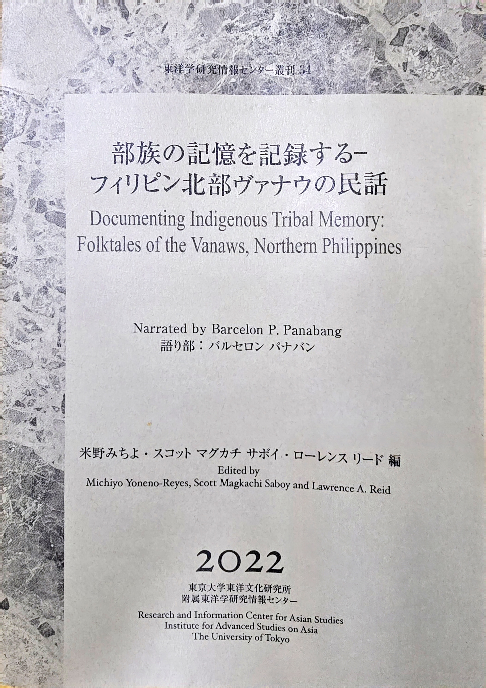

TUVYAN · WORDS THAT MATTER
About TUVYAN
Writing, language, memory, and the places that shape us.

Welcome
TUVYAN is a space for my creative (creative nonfiction, poetry, and photography) and academic works (published and unpublished papers, book projects, language and culture documentation, and language teaching).
Indigeneity
I belong to two northern Philippine ethnolinguistic groups, the Bontok and the Vanaw (Banao), and thus identify with an aggrupation of highlanders collectively known as "Igorots" [i = from + golod 'mountain']. Currently, my language and documentation work focuses on my father's people, the iVanaw whose tribal territory covers most of the municipality of Malibkung (Malibcong) and all of the municipality of Jagyuman (Daguioman) in the Province of Abra, and three barangays -- Pattikyan (Pantikian), Talalang, and Valvalasang (Balbalasang) -- in the Province of Kalinga.
Japanese ethnomusicologist Michiyo Yoneno-Reyes, Austronesian languages expert Lawrence Andrew Reid, and I edited the first published folkloric narrative collection in 2022, courtesy of the Institute for Advanced Studies on Asia, The University of Tokyo. The stories were narrated by a well-known iVanaw bard, Barcelon Panabang, and were first recorded by Dr. Yoneno-Reyes in the early 2000s, but transcription and translation only began in 2001 during my two-week stay in Osaka upon the invitation of Dr. Yoneno-Reyes, where I had the privilege of working with Dr. Reid for the first time. It took almost two years of back-and-forth correspondence among us three (I in Bahrain, and they in Japan) until we finally came up with the final draft of the book. A Philippine edition of the book is in the works, with Dr. Yoneno-Reyes coordinating between The University of Tokyo and the University of the Philippines Baguio.
I am also working with my community on the completion of the Vinanaw Orthography and Dictionary. After this project, I intend to transcribe recordings of folkloric narratives I've made among some storytellers in my community, most of whom have now passed away. All these works will eventually be published and be copyrighted by the Banao Bodong Tribal Association (BBTA).

Spirituality
Family Heritage
Preserving family and community histories is one of TUVYAN's continuing purposes, so you will find in this website accounts about my own family., especially those of veteran journalist Augustus "Gus" Ulat Saboy and ethnomusicologist Anatalia Magkachi Saboy. Gus Saboy's song compositions, along with his journalistic works, are also posted here.
My recently launched music album, CARAVAN, is also featured here. The songs are also available for download on Spotify.
Work and Hobby
I have been teaching for over 15 years now, mostly in the area of English language teaching. Over the years, I have had the privilege of working as a local journalist, call center agent, Local Government Operations Officer, Church Minister, English tutor, and English teacher, among others. After resigning from the University of the Philippines Baguio as an Assistant Professor in Language and Literature, I came to Bahrain to teach English.
I am an amateur photographer, amateur calisthenics enthusiast, and a regular dragonboat paddler with the Hurricane Alpha Racing Dragons (HARD).
Connect
Your thoughtful responses on any of the posts or articles here are always welcome!